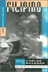
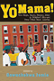

|
Tomboys
A Literary and Cultural History
Abate, Michelle Ann
338 pp • 6x9 • Spring 2008
paper 978-1-59213-723-7
cloth 978-1-59213-722-0
|

|
From Slave Ship to Supermax
Mass Incarceration, Prisoner Abuse, and the New Neo-Slave Novel
Alexander, Patrick Elliot
266 pp • 6x9 • Fall 2017
paper 978-1-4399-1415-1
cloth 978-1-4399-1414-4 |

|
Toward
Solomon's Mountain
The Experience of Disability in Poetry
edited by Baird, Joseph L. and Deborah S. Workman 160
pp • Spring 1986
cloth 978-0-87722-416-7 |
 |
Sexology and Translation
Cultural and Scientific Encounters across the Modern World
edited by Bauer, Heike
284 pp • 6x9 • Fall 2015
paper 978-1-4399-1249-2
cloth 978-1-4399-1248-5 |

|
God
in the Street
New York Writing from The Penny Press to Melville
Bergmann, Hans 272 pp • 6x9 • Fall
1995
paper 978-1-56639-358-4
cloth 978-1-56639-357-7
|
|
Reading Up
Middle-Class Readers and the Culture of Success in the Early Twentieth-Century United States
Blair, Amy L.
264 pp • 6x9 • Fall 2011
paper 978-1-4399-0668-2
cloth 978-1-4399-0667-5
|

|
Black
Women Writing Autobiography
A Tradition Within a Tradition
Braxton, Joanne M. 240 pp • Fall 1989
paper 978-0-87722-803-5
cloth 978-0-87722-639-0 |

|
The
Cry and the Dedication
Bulosan, Carlos, edited by E. San Juan, Jr. 344
pp • 6x9 • Spring 1995
paper 978-1-56639-296-9
cloth 978-1-56639-295-2
|

|
On
Becoming Filipino
Selected Writings of Carlos Bulosan
Bulosan, Carlos,
edited by E. San Juan, Jr.
240
pp • 5.5x8.25 • Spring 1995
paper 978-1-56639-310-2
cloth 978-1-56639-309-6 |

|
Race,
Gender, and Desire
Narrative Strategies in the Fiction of Toni Cade Bambara, Toni
Morrison, and Alice Walker
Butler-Evans, Elliott
232 pp • Spring
1989
paper 978-0-87722-831-8
cloth 978-0-87722-608-6 |

|
Searching
for Safe Spaces
Afro-Caribbean Women Writers in Exile
Chancy, Myriam J. A. 272 pp • 6x9 •
Fall 1997
paper 978-1-56639-540-3
cloth 978-1-56639-539-7
|

|
The
World of Kate Roberts
Selected Stories, 1925-1981
translated by Clancy, Joseph P. 400 pp •
Fall 1991
paper 978-0-87722-795-3
cloth 978-0-87722-794-6 |

|
The Asian American Avant-Garde
Universalist Aspirations in Modernist Literature and Art
Clark, Audrey Wu
246 pp • 6x9 • Fall 2015
paper 978-1-4399-1227-0
cloth 978-1-4399-1226-3 |

|
Bridging
the Americas
The Literature of Paule Marshall, Toni Morrison, and Gayl Jones
Coser, Stelamaris 240 pp • 5.5x8.25 •
Fall 1994
paper 978-1-56639-267-9
cloth 978-1-56639-266-2 |

|
Literary
Gestures
The Aesthetic in Asian American Writing
edited by Davis, Rocío G. and Sue-Im Lee 248
pp • 6x9 • Fall 2005
paper 978-1-59213-365-9
cloth 978-1-59213-364-2
|
|
Classical
Hindu Mythology
A Reader in the Sanskrit Puranas
edited by Dimmit, Cornelia, translated by J. A. B van Buitenen
388 pp • 6x9 • Spring 1978
paper 978-0-87722-122-7
cloth 978-0-87722-117-3
|

|
Mulan's Legend and Legacy in China and the United States
Dong, Lan
280 pp • 6x9 • Fall 2010
paper 978-1-59213-971-2
cloth 978-1-59213-970-5
|

|
Unraveling the Real
The Fantastic in Spanish-American Ficciones
Duncan, Cynthia
280 pp • 6x9 • Fall 2010
paper 978-1-4399-0241-7
cloth 978-1-4399-0240-0
|

|
Black Regions of the Imagination
African American Writers between the Nation and the World
Dunbar, Eve
232 pp • 5.5x8.25 • Fall 2012
paper 978-1-4399-0943-0
cloth 978-1-4399-0942-3
|

|
Treacherous Subjects
Gender, Culture, and Trans-Vietnamese Feminism
Duong, Lan P.264 pp • 6x9 • Spring 2012
paper 978-1-4399-0178-6
cloth 978-1-4399-0177-9
|

|
The Archival Turn in Feminism
Outrage in Order
Eichhorn, Kate
208 pp • 5.5x8.5 • Fall 2013
paper 978-1-4399-0952-2
cloth 978-1-4399-0951-5
|

|
Who Will Speak for America?
edited by Feldman, Stephanie and Nathaniel Popkin
238 pp • 6x9 • Spring 2018
paper 978-1-4399-1624-7
cloth 978-1-4399-1625-4
|

|
Free
Women
Ethics and Aesthetics in Twentieth-Century Women's Fiction
Fullbrook, Kate 192 pp • Fall 1990
paper 978-0-87722-774-8
cloth 978-0-87722-773-1 |

|
Derrida
and Wittgenstein
Garver, Newton and Seung-Chong Lee 264 pp
• 5.5x8.25 • Spring 1994
paper 978-1-56639-374-4
cloth 978-1-56639-172-6 |

|
Pimping Fictions
African American Crime Literature and the Untold Story of Black Pulp Publishing
Gifford, Justin
216 pp • 6x9 • Spring 2013
paper 978-1-4399-0811-2
cloth 978-1-4399-0810-5
|

|
The
Effects of the Nation
Mexican Art in an Age of Globalization
edited by Good, Carl and John V. Waldron 232
pp • 6x9 • Spring 2001
paper 978-1-56639-866-4
cloth 978-1-56639-865-7
|
|
From
Mammies to Militants
Domestics in Black American Literature
Harris, Trudier 248 pp • Fall 1982
cloth 978-0-87722-279-8 |

|
Black
Theatre
Ritual Performance in the African Diaspora
edited by Harrison, Paul Carter, Victor Leo Walker II and Gus Edwards
432 pp • 7x10 • Spring 2002
paper 978-1-56639-944-9
cloth 978-1-56639-943-2
|

|
California
and the Fictions of Capital
Henderson, George L. 304 pp • 6.125x9.25
• Spring 2003
paper 978-1-59213-198-3
|

|
Nietzsche's
Zarathustra
Higgins, Kathleen Marie 328 pp • Fall
1987
paper 978-0-87722-687-1
cloth 978-0-87722-482-2 |

|
Morte
d'Author
An Autopsy
Hix, H. L. 224 pp • Fall 1990
cloth 978-0-87722-734-2 |

|
Savoring the Salt
The Legacy of Toni Cade Bambara
edited by Holmes, Linda Janet and Cheryl A. Wall
320 pp • 6x9 • Fall 2007
paper 978-1-59213-625-4
cloth 978-1-59213-624-7
|

|
The
Politics of Life
edited by Houston, Velina Hasu 288 pp •
6x9 • Spring 1993
paper 978-1-56639-001-9
cloth 978-1-56639-000-2 |

|
But
Still, Like Air, I'll Rise
New Asian American Plays
edited by Houston, Velina Hasu, foreword by Roberta Uno 520
pp • 6x9 • Spring 1997
paper 978-1-56639-538-0
cloth 978-1-56639-537-3
|

|
Sounding Off
Rhythm, Music, and Identity in West African and Caribbean Francophone Novels
Huntington, Julie
256 pp • 6x9 • Fall 2009
cloth 978-1-4399-0031-4
|

|
Staging
Strikes
Workers' Theatre and the American Labor Movement
Hyman, Collette A. 224 pp • 5.5x8.25
• Spring 1997
cloth 978-1-56639-504-5
|

|
Intention
and Interpretation
edited by Iseminger, Gary 304 pp • 6x9
• Fall 1992
paper 978-1-56639-346-1
cloth 978-0-87722-971-1
|

|
Yo'
Mama!
New Raps, Toasts, Dozens, Jokes and Children's Rhymes from Urban
Black America
edited by Jemie, Onwuchekwa 344 pp •
6x9 • Spring 2003
paper 978-1-59213-029-0
cloth 978-1-59213-028-3
|

|
Dr. Radway's Sarsaparilla Resolvent
Kephart, Beth
266 pp • 5.5x8.5 • Spring 2013
paper 978-0-98404-296-8
|

|
Flow
The Life and Times of Philadelphia's Schuylkill River
Kephart, Beth
120 pp • 5.5x8.25 • Spring 2007
paper 978-1-59213-637-7
cloth 978-1-59213-636-0 |

|
Asian
American Literature
An Introduction to the Writings and Their Social Context
Kim, Elaine H. 363 pp • Spring 1982
paper 978-0-87722-352-8
cloth 978-0-87722-260-6 |
|
Writing
Wrongs
The Work of Wallace Shawn
King, W. D., foreword by John Lahr 264 pp
• 5x9 • Spring 1997
cloth 978-1-56639-517-5 |

|
Tiananmen Fictions Outside the Square
The Chinese Literary Diaspora and the Politics of Global Culture
Kong, Belinda292
pp • 6x9 • Spring 2012
paper 978-1-4399-0759-7
cloth 978-1-4399-0758-0
|

|
East Is West and West Is East
Gender, Culture, and Interwar Encounters between Asia and America
Kuo, Karen
220 pp • 5.5x8.25 • Fall 2012
paper 978-1-4399-0587-6
cloth 978-1-4399-0586-9
|

|
Recovered
Legacies
Authority and Identity in Early Asian American Literature
edited by Lawrence, Keith and Floyd Cheung 320
pp • 6x9 • Spring 2005
paper 978-1-59213-119-8
cloth 978-1-59213-118-1
|

|
Asian American Plays for a New Generation
Edited by Lee, Josephine, Don Eitel, and R. A. Shiomi
336 pp • 6x9 • Spring 2011
paper 978-1-4399-0516-6
cloth 978-1-4399-0515-9
|

|
Performing
Asian America
Race and Ethnicity on the Contemporary Stage
Lee, Josephine 256 pp • 6x9 • Spring
1997
paper 978-1-56639-637-0
cloth 978-1-56639-502-1
|

|
Re/collecting
Early Asian America
Essays in Cultural History
edited by Lee, Josephine, Imogene L. Lim and Yuko Matsukawa
384 pp • 7x10 • Spring 2002
paper 978-1-56639-964-7
cloth 978-1-56639-963-0
|

|
Searching for Mr. Chin
Constructions of Nation and the Chinese in West Indian Literature
Lee-Loy, Anne-Marie
198 pp • 5.5x8.25 • Spring 2010
cloth 978-1-43990-130-4
|

|
Lesbian
and Gay Writing
An Anthology of Critical Essays
edited by Lilly, Mark 220 pp • Spring
1990
cloth 978-0-87722-706-9 |

|
Reading
the Literatures of Asian America
edited by Lim, Shirley Geok-lin and Amy Ling 384
pp • 6x9 • Fall 1992
paper 978-0-87722-936-0
cloth 978-0-87722-935-3
|

|
Transnational
Asian American Literature
Sites and Transits
edited by Lim, Shirley Geok-lin, John Blair Gamber, Stephen Hong Sohn
and Gina Valentino
320 pp • 6x9 • Fall 2005
paper 978-1-59213-451-9
cloth 978-1-59213-450-2
|

|
Culinary Fictions
Food in South Asian Diasporic Culture
Mannur, Anita
272 pp • 6x9 • Fall 2009
paper 978-1-4399-0078-9
cloth 978-1-4399-0077-2
|

|
Forms
in the Abyss
A Philosophical Bridge between Sartre and Derrida
Martinot, Steve
320 pp • 6x9 • Spring 2006
paper 978-1-59213-440-3
cloth 978-1-59213-439-7
|

|
Unbought and Unbossed
Transgressive Black Women, Sexuality, and Representation
Melancon, Trimiko
256 pp • 5.5x8.5 • Fall 2014
paper 978-1-43991-146-4
cloth 978-1-43991-145-7 |

|
Re-Viewing
James Baldwin
Things Not Seen
edited by Miller, D. Quentin, foreword by David Adams Leeming
312 pp • 6x9 • Fall 1999
paper 978-1-56639-737-7
cloth 978-1-56639-736-0
|

|
Accessible Citizenships
Disability, Nation, and the Cultural Politics of Greater Mexico
Minich, Julie Avril
240 pp • 5.5x8.5 • Fall 2013
paper 978-1-4399-1070-2
cloth 978-1-4399-1069-6
|
|
The
American Diary of a Japanese Girl
An Annotated Edition
Noguchi, Yone, edited by Edward Marx and Laura E. Franey
224 pp • 6x9 • Fall 2006
paper 978-1-59213-555-4
cloth 978-1-59213-554-7
|

|
Knowledge,
Fiction, and Imagination
Novitz, David 280 pp • Fall 1987
cloth 978-0-87722-480-8 |

|
This Is All I Choose to Tell
History and Hybridity in Vietnamese American Literature
Pelaud, Isabelle Thuy
216 pp • 5.5x8.25 • Fall 2010
paper 978-1-4399-0217-2
cloth 978-1-4399-0216-5
|

|
Paradise,
New York
A Novel
Pollack, Eileen 288 pp • 5x9 • Fall
1998
paper 978-1-56639-789-6
cloth 978-1-56639-657-8
|
|
Crowding
Out Latinos
Mexican Americans in the Public Consciousness
Portales, Marco 240 pp • 6x9 • Fall
1999
paper 978-1-56639-743-8
cloth 978-1-56639-742-1
|

|
Rites
of Assent
Two Novellas
Qasim, Abd al-Hakim, translated by Peter Theroux, introduction by
Samia Mehrez 192 pp • 5.5x8.25 •
Spring 1995
paper 978-1-56639-354-6
cloth 978-1-56639-353-9
|

|
Home
Girls
Chicana Literary Voices
Quintana, Alvina E. 176 pp • 5.5x8.25
• Fall 1995
paper 978-1-56639-373-7
cloth 978-1-56639-372-0 |
 |
Fashioning Diaspora
Beauty, Femininity, and South Asian American Culture
Reddy, Vanita
280 pp • 6x9 • Spring 2016
paper 978-1-4399-1155-6
cloth 978-1-4399-1154-9
|

|
Girls
Only?
Gender and Popular Children's Fiction in Britain, 1880-1910
Reynolds, Kimberly 208 pp • Fall 1990
cloth 978-0-87722-737-3 |
|
The
Philippine Temptation
Dialectics of Philippines-U.S. Literary Relations
San Juan, Jr., E. 320 pp • 6x9 •
Spring 1996
paper 978-1-56639-418-5
cloth 978-1-56639-417-8
|

|
Racial Feelings
Asian America in a Capitalist Culture of Emotion
Santa Ana, Jeffrey
272 pp • 6x9
• Spring 2015
paper 978-1-4399-1193-8
cloth 978-1-4399-1192-1 |

|
Messiahs of 1933
How American Yiddish Theatre Survived Adversity through Satire
Schechter, Joel
304 pp • 6x9 • Spring 2008
cloth 978-1-59213-872-2
|

|
Modeling Citizenship
Jewish and Asian American Writing
Schlund-Vials, Cathy
248 pp • 6x9 • Spring 2011
paper 978-1-4399-0318-6
cloth 978-1-4399-0317-9
|

|
Poems
Performance Pieces Proses Plays Poetics
Schwitters, Kurt, edited by Jerome Rothenberg, translated by Pierre
Joris 288 pp • 7x10 • Spring 1993
paper 978-1-56639-264-8
cloth 978-0-87722-894-3 |

|
Hard-Boiled
Working-Class Readers and Pulp Magazines
Smith, Erin A. 248 pp • 6x9 • Spring
2000
paper 978-1-56639-769-8
cloth 978-1-56639-768-1
|
|
Economic Citizens
A Narrative of Asian American Visibility
So, Christine
190 pp • 6x9 • Fall
2007
paper 978-1-59213-585-1
cloth 978-1-59213-584-4
|
 |
African American Writing
A Literary Approach
Sollors, Werner
296 pp • 6x9 • Spring 2016
paper 978-1-4399-1337-6
cloth 978-1-4399-1336-9
|

|
Constructing the Enemy
Empathy/Antipathy in U.S. Literature and Law
Srikanth, Rajini
220 pp • 6x9 • Fall 2011
paper 978-1-4399-0324-7
cloth 978-1-4399-0323-0
|

|
The
World Next Door
South Asian American Literature and the Idea of America
Srikanth, Rajini 304 pp • 6x9 •
Fall 2004
paper 978-1-59213-081-8
cloth 978-1-59213-080-1
|
|
Asian American Women's Popular Literature
Feminizing Genres and Neoliberal Belonging
Thoma, Pamela
232 pp • 6x9 • Fall 2013
paper 978-1-4399-1019-1
cloth 978-1-4399-1018-4 |

|
Unquiet Tropes
Form, Race, and Asian American Literature
Tsou, Elda E.
224 pp • 5.5x8.5 • Spring 2015
paper 978-1-4399-1125-9
cloth 978-1-4399-1124-2 |

|
The Coolie Speaks
Yun, Lisa
336 pp • 6x9 • Fall 2007
paper 978-1-59213-582-0
cloth 978-1-59213-581-3
|